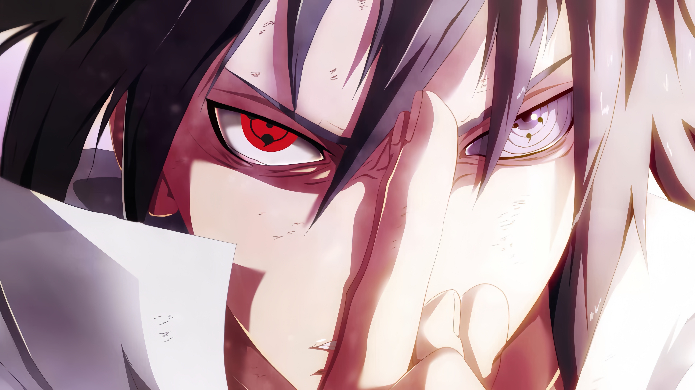

<!--HTML - hyper text markup language-->
<!-- crtl+/=<! -->
Saba
<!-- გამხსნელი თეგი       დამხურავი -->
<button>15</button>
<!-- p(paragraph) - პარაგრაფ თეგი გამოიყენება საიტზე ტექსტის გამოსატანად -->
<p>Gogokhia</p>
<!-- img(image) - სურათის თეგი გამოიყენება საიტზე სურათის გამოსატანად -->
<!-- სხვა საიტიდან -->

<!-- ჩემი ფაილებიდან -->

<!-- default სურათის ზომა width="285" -->